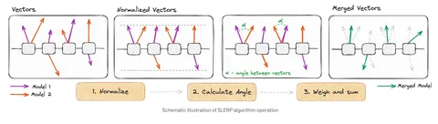

Как можно догадаться из названия, слияние моделей — или мёржинг — это процесс совмещения двух или более LLM в одну. Самый базовый тип методов — усреднение весов. Например, exponential moving average, предполагающий смешивание веса одной модели на нескольких последних итерациях. Но есть и другие способы — о них и расскажем в этом посте.
SLERP (Spherical Linear Interpolation) предполагает, что мы рассматриваем веса модели не как набор чисел, а как вектора. Схему этого метода вы можете увидеть на картинке выше.
Усреднение происходит за счёт изменения угла между векторами в модели — то есть поворотом весов одной модели в сторону другой. Метод схож с усреднением весов потому что это тоже линейное комбинирование.
Более того, если вектора весов сонаправлены, то SLERP сводится к их усреднению. Магнитуда векторов в SLERP сохраняется. Минус метода в том, что его можно использовать только для слияния двух моделей единовременно.
Здесь стоит сказать о таск-векторах — то есть разнице весов предобученной и файнтюненной модели. При мерджинге файнтюнов одного предобучения можно сливать вместе не веса, а соответствующие таск-вектора.
Следующий метод — TIES. Здесь сперва нужно посчитать таск-вектора моделей и в тех параметрах, где вектора меньше некоего порога, занулить их. Далее следует «разрешить конфликты» между таск-векторами двух LLM: то есть избавиться от противоположных векторов и создать единый. Если изменение направлено в одну сторону, то делать ничего не надо, а если в разные — занулить наименьшее. Наконец, происходит сам мёрж любым способом. TIES так же подходит только для слияния двух моделей.
На этом на сегодня всё. А в следующей части мы расскажем ещё о паре классических методов и о самом популярном сейчас способе мержинга. Оставайтесь на связи и делитесь своим опытом в комментариях!
Душный NLP
